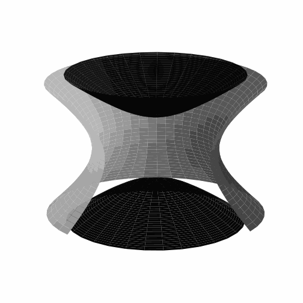

The Penning Trap
The Penning trap is an ion trap first built by Hans Georg Dehmelt in 1959.
In order to trap a particle with charge q in a limited volume, one needs a minimum of the potential
energy \(V\). With this in mind and the well known relationship between a potential and its force \(\vec{F}=-\nabla V\) the corresponding force has to be:
$$\vec{F}=-c \vec{r}\:\:\Rightarrow\:\:\varphi=\frac{V}{q}=\frac{c}{2q}\vec{r}\:^2=\frac{c}{2q}(Ax^2+By^2+Cz^2)$$
Since \(\varphi\) has to obey the Laplace equation \(\Delta \varphi=0\) one finds that \(A+B+C=0\).
For the Penning trap it is common to set \(C=2\) and \(A=B=-1\).
Unfortunately due to the differing signs, we dont get the desired extrema but at least a saddle point. However note that it is not possible to confine a charged particle
only with static electric fields. But if one wants to trap a
particle only with static fields there is the option to add a constant magnetic field along the
z direction. These two fields physically construct the Penning trap.
To create the electric field, one usually has a ring electrode,
which is mathematically a hyperbolic hyperboloid (one sheet) and two end cap
electrodes, which are mathematically an elliptic hyperboloid (two sheets). If we
denote the distance of the trap center to the end cap electrode with \(z_0\) and the
distance of the trap center to the ring electrode with \(r_0\), one would obtain:
$$z^2-\frac{x^2}{2}-\frac{y^2}{2}=z_0^2,\:\:\:\:\:\:\:\:\:\:z^2-\frac{x^2}{2}-\frac{y^2}{2}=-\frac{r_0^2}{2}$$
By taking a look on the electrode potentials one gets:
$$c=-\frac{4V_0q}{2z_0^2+r_0^2}=-\frac{V_0q}{d^2},\:\:\:\:\:\:\:\:\:\:\:\:d:=\sqrt{\frac{1}{2}\big(z_0^2+\frac{1}{2}r_0^2\big)}$$
Note that \(2V_0\) is the voltage difference between the ring electrode and the end cap electrodes. This means: $$2V_0=\varphi_{ring}-\varphi_{end}=-c r_0^2/(2q)-cz_0^2/q $$ It is convention to apply an equal absolute value of voltage on the respective electrode.
\(d\) is the so called geometrical parameter of the trap. According to the laws of electrodynamics \(\vec{E}=-\nabla \varphi\) one now finds the following magnetic and electric field:
$$\begin{align}
&\vec{B}=B_0\begin{pmatrix}
0\\
0\\
1
\end{pmatrix}\end{align},\:\:\:\:\:\:\:\:\:\:\:\:\:\:\:\:\:\:\:\:\:\:\:\:\vec{E}=-\frac{V_0}{d^2}\begin{pmatrix}
\:\:\:x\:\\
\:\:\:y\:\\
-2z
\end{pmatrix}$$
For the particles trajectory one needs to consider the Lorentz force:
$$ m\ddot{\vec{r}}=q\big(\vec{E}+\dot{\vec{r}}\times\vec{B}_0\big)=-\frac{V_0q}{d^2}\begin{pmatrix}
\:\:\:x\:\\
\:\:\:y\:\\
-2z
\end{pmatrix}+q\begin{pmatrix}
\dot{x}\\
\dot{y}\\
\dot{z}
\end{pmatrix}\times \begin{pmatrix}
0\\
0\\
B_0
\end{pmatrix}$$
For an electron with \(q=-e\) one therefore obtains:
$$m\begin{pmatrix}
\ddot{x}\\
\ddot{y}\\
\ddot{z}
\end{pmatrix}=e\begin{pmatrix}
\frac{V_0}{d^2}x-B_0\dot{y}\\
\frac{V_0}{d^2}y+B_0\dot{x}\\
-\frac{2V_0}{d^2}z
\end{pmatrix}$$
It is easy to spot that the motion in z direction is independent from the motion in the x-y plane. One further concludes that \(V_0\times q\) must be of negative sign in order to confine the particle in the axial direction. This means that the endcap electrodes need to be charged with the same sign as the particles charge. Otherwise the solution of the above equation would be an exponential growing function. The ansatz to solve this equation is:
$$z(t)=e^{\lambda t},\:\:\:\:\:\:\:\:\:\lambda^2=-\omega_z^2,\:\:\:\:\:\:\:\:\:\lambda_{\pm}=\pm i\omega_z,\:\:\:\:\:\:\:\:\:\omega_z^2=\frac{2eV_0}{md^2}$$
The solution is the superposition of the two solutions above:
$$z(t)=C_1e^{i\omega_zt}+C_2e^{-i\omega_zt}$$
In order to find a real solution it requires \(|C_1|=|C_2|\), we therefore get the well known harmonic oscillator:
$$z(t)=C_z\cos{(\omega_zt+\phi_z)}$$
This axial independent movement is really practical for experiments as it allows a lot of flexibility. The trajectory in the plane perpendicular to the axial z direction is a bit more complicated because it is given by a linear coupled system of differential equations. It can be written in matrix form as:
$$\frac{\omega_z^2}{2}\begin{pmatrix}
x\\
y
\end{pmatrix}=\begin{pmatrix}
\ddot{x}\\
\ddot{y}
\end{pmatrix}+\omega_c \begin{pmatrix}
\:\:\:\:\dot{y}\\
-\dot{x}
\end{pmatrix}=I\begin{pmatrix}
\ddot{x}\\
\ddot{y}
\end{pmatrix}+A\begin{pmatrix}
\dot{x}\\
\dot{y}
\end{pmatrix}$$
with:
$$I:=\begin{pmatrix}
1&0\\
0&1
\end{pmatrix},\:\:\:\:\:\:\:\:\: A:=\begin{pmatrix}
0&\omega_c\\
-\omega_c&0
\end{pmatrix},\:\:\:\:\:\:\:\:\:\omega_c:=\frac{eB_0}{m}$$
One can diagonalise matrix \(A\) by:
$$A=PDP^{-1}$$
where the column vectors of \(P\) form a basis of eigenvectors and \(D\) is diagonal with the corresponding eigenvectors as entries.
The eigenvalues are given by:
$$det(A-\lambda I)=\lambda^2+\omega_c^2=0\:\:\Rightarrow\lambda_{\pm}=\pm i\omega_c$$
The ansatz for the eigenvectors is \( (A-\lambda_{\pm})\vec{x}=0 \), so one gets:
$$\vec{v}_{+}=\frac{1}{\sqrt{2}}\begin{pmatrix}
-i\\
\:\:1
\end{pmatrix},\:\:\:\:\:\:\:\:\:\:\:\:\:\:\:\:\:\:\vec{v}_{-}=\frac{1}{\sqrt{2}}\begin{pmatrix}
i\\
1
\end{pmatrix}$$
The matrices \(P\) and \(D\) are given by:
$$D=\begin{pmatrix}
i\omega_c&\:\:\:0\\
0&-i\omega_c
\end{pmatrix},\:\:\:P=\frac{1}{\sqrt{2}}\begin{pmatrix}
-i&i\\
\:\:\:1&1
\end{pmatrix},\:\:\:P^{-1}=\frac{1}{\sqrt{2}}\begin{pmatrix}
\:\:\:i&1\\
-i&1
\end{pmatrix}$$
Note that a skew-hermitian (normal) matrix like \(A\) is diagonalised by an unitary matrix that means \(P^{-1}=P^\dagger\).
Now we define:
$$\begin{pmatrix}
x\\
y
\end{pmatrix}:=P\begin{pmatrix}
u\\
v
\end{pmatrix}$$
So we get:
$$\frac{\omega_z^2}{2}P\begin{pmatrix}
u\\
v
\end{pmatrix}=IP\begin{pmatrix}
\ddot{u}\\
\ddot{v}
\end{pmatrix}+AP\begin{pmatrix}
\dot{u}\\
\dot{v}
\end{pmatrix}$$
Multiplying with \(P^{-1}\) from the left decouples the system:
$$
\frac{\omega_z^2}{2}\begin{pmatrix}
u\\
v
\end{pmatrix}=I\begin{pmatrix}
\ddot{u}\\
\ddot{v}
\end{pmatrix}+D\begin{pmatrix}
\dot{u}\\
\dot{v}
\end{pmatrix}
$$
We now use the ansatz \(u(t)=e^{\lambda_ut}\) and \(v(t)=e^{\lambda_vt}\) to obtain:
$$\lambda_u^2+i\omega_c\lambda_u-\dfrac{\omega_z^2}{2}=0,\:\:\:\:\:\lambda_v^2-i\omega_c\lambda_v-\dfrac{\omega_z^2}{2}=0$$
The solutions to these equations for \(\omega_c^2 > 2\omega_z^2\) are:
$$\lambda_{u1}=-i\omega_c',\:\:\lambda_{u2}=-i\omega_m,\:\:\:\:\:\:\:\:\:\:
\lambda_{v1}=i\omega_c',\:\:\lambda_{v2}=i\omega_m$$
with:
$$\omega_c'=\frac{\omega_c}{2}+\sqrt{\frac{\omega_c^2}{4}-\frac{\omega_z^2}{2}},\:\:\:\:\:\:\:\:\:\omega_m=\frac{\omega_c}{2}-\sqrt{\frac{\omega_c^2}{4}-\frac{\omega_z^2}{2}}$$
\(\omega_c'\) is the so called modified cyclotron frequency and \(\omega_m\) the magnetron frequency. The solution for the decoupled system is:
$$\begin{pmatrix}
u\\
v
\end{pmatrix}=\begin{pmatrix}
C_1e^{-i\omega_c't}+C_2e^{-i\omega_m t}\\
C_3e^{i\omega_c't}+C_4e^{i\omega_m t}
\end{pmatrix}$$
We therefore obtain:
$$\begin{pmatrix}
x\\
y
\end{pmatrix}=\frac{1}{\sqrt{2}}\begin{pmatrix}
-iC_1e^{-i\omega_c't}+iC_3e^{i\omega_c't}-iC_2e^{-i\omega_m t}+iC_4e^{i\omega_m t}\\
C_1e^{-i\omega_c't}+C_3e^{i\omega_c't}+C_2e^{-i\omega_m t}+C_4e^{i\omega_m t}
\end{pmatrix}$$
Now one has to choose the constants such that we obtain real functions. This is the case for
\(|C_1|=|C_3|\) and \(|C_2|=|C_4|\). Depending on how one chooses the constants \(C_1,C_2,C_3\) and \(C_4\) further one gets different combinations of sine and cosine.
So the general solution is:
$$\begin{pmatrix}
x\\
y
\end{pmatrix}=C_c\begin{pmatrix}
\cos{(\omega_c't + \phi_c)} \\
\sin{(\omega_c't + \phi_c)}
\end{pmatrix}+C_m\begin{pmatrix}
\cos{(\omega_mt + \phi_m)} \\
\sin{(\omega_mt + \phi_m)}
\end{pmatrix}$$
Another way of solving such a coupled system of ordinary differential equations:
$$\dfrac{d}{dt}\vec{u}(t)=\vec{F}(t,\vec{u}(t)),\:\:\:\:\:\:\:\:\:\:\:\:\:\:\:\:\:\:\:\:\:\:\vec{u}(t_0)=\vec{u}_0$$
Can be done numerically through the Euler method:
$$\vec{u}_{n+1}=\vec{u}_n+\Delta t\vec{F}(t_n,\vec{u}_n),\:\:\:\:\:\:\:\:\:\:\:\:\:\:t_{n+1}=t_n+\Delta t$$
In order for this method to work, one has to rewrite our sytem in a set of first order differential equations depending on:
$$x_1=x,\:\:\:\:\:x_2=\dot{x},\:\:\:\:\:y_1=y,\:\:\:\:\:y_2=\dot{y},\:\:\:\:\:z_1=z,\:\:\:\:\:z_2=\dot{z}$$
We therefore obtain the following algorithm for the x component:
$$x_{1,n+1}=x_{1,n}+\Delta t x_{2,n},\:\:\:\:\:x_{2,n+1}=x_{2,n}+\Delta t (\frac{w_z^2}{2}x_{1,n}-w_c y_{2,n})$$
For the y component, one gets:
$$y_{1,n+1}=y_{1,n}+\Delta t y_{2,n},\:\:\:\:\:\:\:\:\:\:y_{2,n+1}=y_{2,n}+\Delta t (\frac{w_z^2}{2}y_{1,n}+w_c x_{2,n})$$
The z component can be calculated by:
$$z_{1,n+1}=z_{1,n}+\Delta t z_{2,n},\:\:\:\:\:\:\:\:\:\:z_{2,n+1}=z_{2,n}-\Delta t \omega_z^2z_{1,n}$$
The comparison of the analytical and numerical result can be seen in figure 5.
An interesting fact is that the quantum mechanical Hamiltonian of the Penning trap is as well described by 3 harmonic oscillators:
$$\hat{H}_P=\hbar\omega_z(\hat{a}_z^\dagger \hat{a}_z+\frac{1}{2})+\hbar\omega_c'(\hat{a}_c^\dagger \hat{a}_c+\frac{1}{2})-\hbar\omega_m(\hat{a}_m^\dagger \hat{a}_m+\frac{1}{2})$$
where the magnetron and modified cyclotron mode are again coupled in the x-y plane and the z mode is inpedendent. For more details on the quantum version of the Penning trap and some cool modifications with extra additional magnetic fields see
[1]. For those of you not familiar with the quantum harmonic oscillator, it is described in the 1D-Crank-Nicolson-Method repository page.

Figure 1: the figure above shows a schematic sketch of the classical Penning trap. This ion trap was developed by Hans Georg Dehmelt in 1959. Unlike its close relative (the Paul trap), the Penning trap uses only static fields which are given by a quadrupole electric field and a constant magnetic field in the z direction. In black, one can see the end cap electrodes, which are mathematically an elliptic hyperboloid. In silver one gets to see the ring electrode, which is mathematically a hyperbolic hyperboloid. In pink one gets to see the trajectory of the charged particle. Notice however that it is a schematic sketch and not drawn to scale.

Figure 2: shows the independent movement in z direction derived from the Lorentz force.
The z direction is sometimes also referred to as axial direction. As you can see the axial movement
is basically a harmonic oscillaton \(z=C_z\cos{(\omega_zt+\phi_z)}\) with frequency \(\omega_z=\sqrt{2eV_0/(md^2)}\), amplitude \(C_z\) and phase \(\phi_z\). The period of such a harmonic oscillator is given by \(T_z=2\pi/\omega_z\).
Note that the figure above is using again arbitrary units and is not to scale. The independent movement in axial direction comes in very handy for all sorts of experiments with Penning traps and is one of the main reasons why they are so popular.

Figure 3: illustrates the coupled movement of the Penning trap in the plane perpendicular to te axial direction and therefore the x-y plane. The x direction movement in time is given by \(x=C_c\cos{(\omega_c't + \phi_c)}+C_m\cos{(\omega_mt + \phi_m)} \) and the movement in y direction is given by \(y=C_c\sin{(\omega_c't + \phi_c)}+C_m\sin{(\omega_mt + \phi_m)} \). \(\omega_c'\) is the so called modified cyclotron frequency and \(\omega_m\) the magnetron frequency. The figure above is again only an illustration and not to scale although \(\omega_c' > \omega_m\) is indeed true.

Figure 4: The figure above shows us how the movement in the x-y plane can be interpreted further in terms of decoupled magnetron and modified cyclotron mode.
In green we see the really fast modified cyclotron motion and in orange the slower magnetron motion. If one superimposes these two separate movements one would again obtain the results of figure 3. The figure is again only for illustration and
not to scale.

Figure 5: Comparison of the analytical (blue) and numerical (pink) trajectories. Illustrates the total solution for the 3 dimensional trajectory of a charged particle in a classical Penning trap calculated from the Lorentz force. It consists of an independent harmonic oscillation in the z direction \(z=C_z\cos{(\omega_zt+\phi_z)}\) and a coupled motion in the x-y plane with with frequency \(\omega_z\), amplitude \(C_z\) and phase \(\phi_z\). The trajectory in x direction is given by \(x=C_c\cos{(\omega_c't + \phi_c)}\)\(+C_m\cos{(\omega_mt + \phi_m)} \) and the one in y direction is \(y=C_c\sin{(\omega_c't + \phi_c)}+\)\(C_m\sin{(\omega_mt + \phi_m)} \). \(\omega_c'\) is the so called modified cyclotron frequency and \(\omega_m\) the magnetron frequency. The movement perpendicular to the z direction can be seen as a coupled movment as shown in figure 3 or as decoupled movements in a slow magnetron mode and a fast modified cyclotron mode like illustrated in figure 4 above. Note that one has set \(\omega_c=28\), \(\omega_z=6.77\) and \(\Delta t=0.005711986642890533\cdot10^{-3}\). Figure 5 is again only an illustration and not to scale although \(\omega_c' >\omega_z > \omega_m \) is indeed true and important for Penning traps.
"""
The code below was written by @author: https://github.com/DianaNtz and is an
implementation of the Euler method. It solves in particular the coupled system
of the ordinary differential equations obtained from the Lorentz force of a
Penning trap. For more details on the code requirements and licences see
https://github.com/DianaNtz/Euler-Method-Example.
"""
import numpy as np
import matplotlib.pyplot as plt
import mpl_toolkits.mplot3d.axes3d as p3
import os
import imageio
filenames = []
#some initial values
wc=28
wz=6.77
wm=wc/2-np.sqrt(wc**2/4-wz**2/2)
wc_mod=wc/2+np.sqrt(wc**2/4-wz**2/2)
dt=0.005711986642890533*10**-3
tfinal=2*np.pi/np.abs(wm)
t0=0
timesteps=int((tfinal-t0)/dt)
x10=np.cos(wm*t0)+0.15*np.cos(t0*wc_mod)
y10=np.sin(wm*t0)+0.15*np.sin(t0*wc_mod)
z10=0.7*np.cos(wz*t0)
x20=(-np.sin(wm*t0)*wm-0.15*np.sin(t0*wc_mod)*wc_mod)
y20=(np.cos(wm*t0)*wm+0.15*np.cos(t0*wc_mod)*wc_mod)
z20=-0.7*np.sin(wz*t0)*wz
t=np.empty(timesteps, dtype='double')
tn=t0
x1=np.empty(timesteps, dtype='double')
x1n=x10
x2=np.empty(timesteps, dtype='double')
x2n=x20
y1=np.empty(timesteps, dtype='double')
y1n=y10
y2=np.empty(timesteps, dtype='double')
y2n=y20
z1=np.empty(timesteps, dtype='double')
z1n=z10
z2=np.empty(timesteps, dtype='double')
z2n=z20
def fx(x,ydot):
return wz**2/2*x-wc*ydot
def fy(y,xdot):
return wz**2/2*y+wc*xdot
def fz(z):
return -wz**2*z
#starting loop for time iteration
for i in range(0,timesteps):
t[i]=tn
x1[i]=x1n
x2[i]=x2n
y1[i]=y1n
y2[i]=y2n
z1[i]=z1n
z2[i]=z2n
z1n=z1n+dt*z2n
z2n=z2n+dt*fz(z1n)
x1n=x1n+dt*x2n
y1n=y1n+dt*y2n
x2n=x2n+dt*fx(x1n,y2n)
y2n=y2n+dt*fy(y1n,x2n)
tn=tn+dt
if(i%5000==0):
fig = plt.figure()
ax = p3.Axes3D(fig)
x=np.cos(wm*t[:i])+0.15*np.cos(t[:i]*wc_mod)
y=np.sin(wm*t[:i])+0.15*np.sin(t[:i]*wc_mod)
z=0.7*np.cos(wz*t[:i])
ax.plot(x, y, z,color='skyblue',linewidth=2)
ax.plot(x1[:i], y1[:i],z1[:i],color='deeppink',linestyle='-.',linewidth=2)
ax.set_xlim(-1.1,1.1)
ax.set_ylim(-1.1,1.1)
ax.set_zlim(-1.1,1.1)
ax.set_xlabel("x(t)",fontsize= 15,labelpad=10)
ax.set_ylabel("y(t)",fontsize= 15,labelpad=10)
ax.set_zlabel("z(t)",fontsize= 15,labelpad=10)
ax.zaxis.set_tick_params(labelsize=13)
ax.yaxis.set_tick_params(labelsize=13)
ax.xaxis.set_tick_params(labelsize=13)
ax.set_xticks([-1,-0.5,0,0.5,1.0])
ax.set_yticks([-1,-0.5,0,0.5,1.0])
ax.set_zticks([-1,-0.5,0,0.5,1.0])
ax.view_init(10, 210)
#ax.view_init(90, 210) #top view
filename ='bla{0:.0f}.png'.format(i/5000)
#append file name to the list filename
filenames.append(filename)
#save the plot
plt.savefig(filename,dpi=150)
plt.close()
#build the gif
with imageio.get_writer('analyvsnumeric.gif', mode='I') as writer:
for filename in filenames:
image = imageio.imread(filename)
writer.append_data(image)
#remove saved figures
for filename in set(filenames):
os.remove(filename)